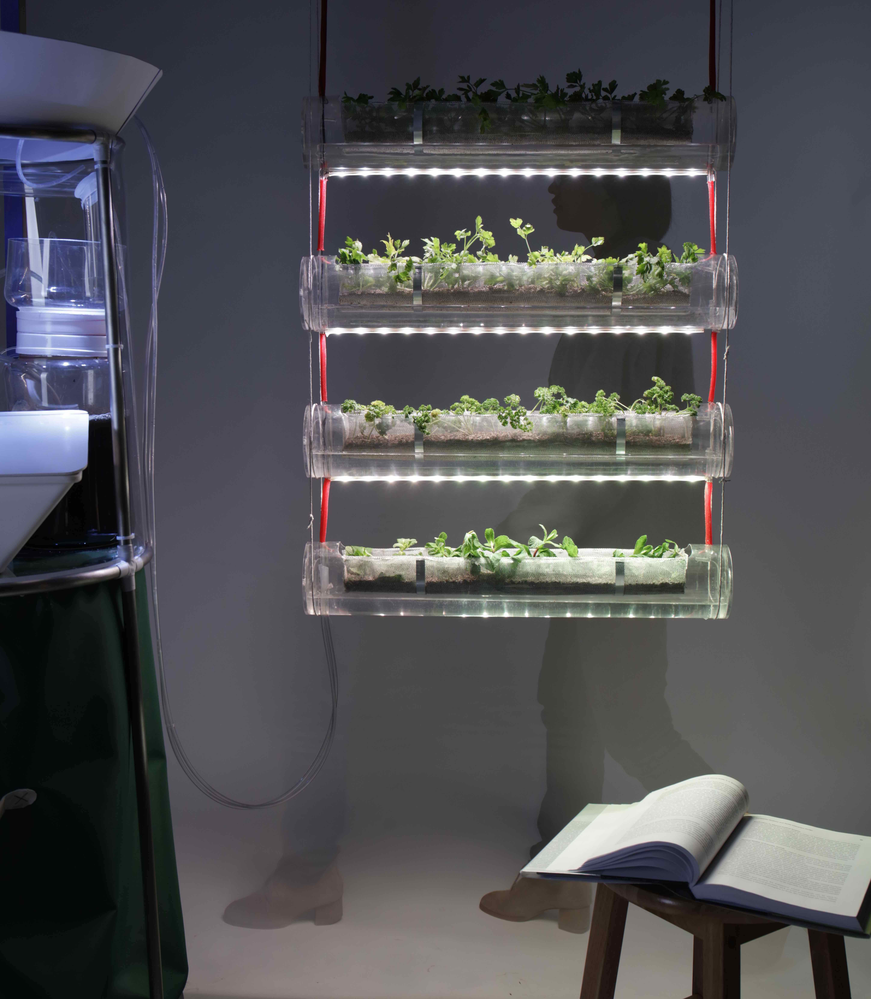
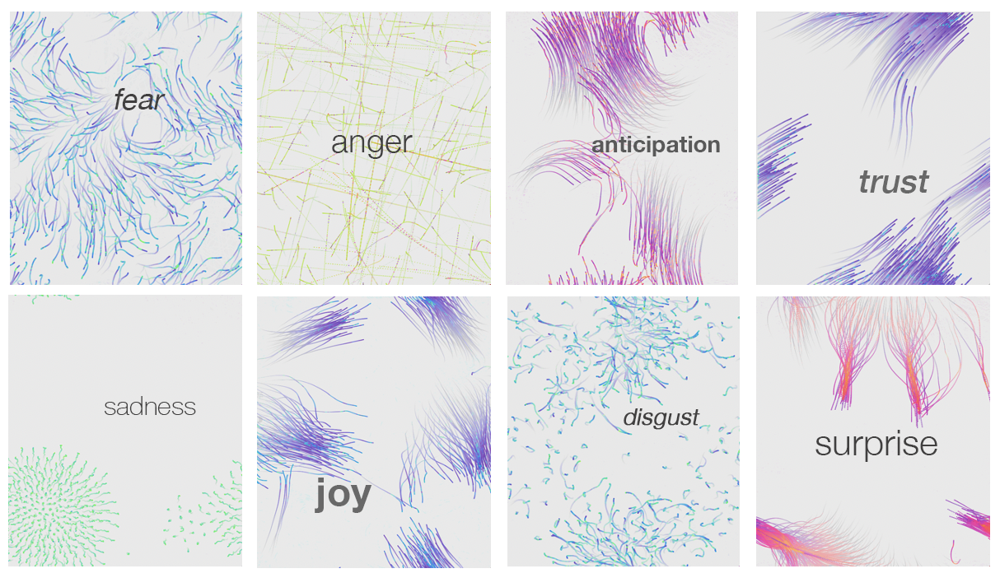

QinTheory | 秦 論
Living the symbiosis of art and science, I am actively combining the two fields to synthesise new knowledge and create emotive experiences
{ work with me }Bridging nature to culture –– using ecological knowledge to re-imagine human conception of Planet Earth and explore new relationships to Nature
Urban Landscape
2020 (in progress)
Urban Landscape is a decision analytics tool that provides an alternative perspective on the relationship between civilisation and the environment.
Urban Landscape is a collaboration with the new model of ecological economics. Our concept proposes seeing a territory as a biological organism, enabling users to visualize the cities in the vicinity of a wild natural environment. The prototype tool uses natural parks data as a proxy indicator –– the nucleus of a cell –– for human well-being and divides a territory into cellular geometries that best approximate the region’s proximity to nature.
Urban Landscapes aims to assist urban planners, architects, policymakers to realise the value of the natural environment in relation to human vitality and influence public policy during the ecological transition.as a mapping tool provides an alternative perspective on the relationship between civilisation and the environment.
Morphosis
2018-2019
Morphosis is a nature-inspired gardening appliance which upcycles urban food waste into energy and biofertilizer.
Food waste management is the one of the biggest unresolved challenges in our food supply chain. Our current industrial food waste processes produce by-products that end up in a landfill site, where it breaks down in the same way but the biogas produced goes straight into the atmosphere and contributes to climate change.

Learning from nature who turns all "wastes" into resources, we propose a circular model to the current food industry: Morphosis the hybrid of ancient technology, anaerobic digestion, and modern agritech, hydroponics. Its process produces both a methane-rich gas that can be used as a fuel, and a bio fertiliser that can be used in farming to boost crop growth. Morphosis enables 100% recycling of food waste and growing new crops locally and economically.
With my teammates are Filippo Tomasi, Stephenia Silva, and Menglin Ye from IDE course, we have competed at the semi-final of Venture Catalyst Challenge (VCC) of Imperial College Enterprise Lab. Morphosis was exhibited at the Imperial College Advanced Hackspace Demo Day as well as the Chemistry Future 2040 conference at the Molecular Sciences Research Hub (MSRH) in London.
Data art for science communication –– elevate emotion and embodiment of scientific knowledge and information technology
Mindscapes
2019-2020 (in progress)
Mindscapes is a psychotherapeutic mind-mapping tool used as an alternative to traditional self-inquiry processes, such as journalling.
Mindscapes provides a topographical view of one's intuitive thinking and its technique is based on psychologist Edward de Bono’s work in Water Logic. Water Logic metaphorically describes the brain’s thought process as the flow of water, from one thought flows to the next, and eventually forms a cyclical pattern; through the same algorithm, neurons are fired and make connections on the micro-level when we are thinking. By mimicking the way our brain is functioning, we can map out the complexity of inner experiences and identify patterns of perceptions in one’s inner world.
Mindscapes web demo can be accessed here. The butterfly graph is the visualization of the mindscapes of a user who used the tool to process unresolved difficulties from an unresolved period in life. I had turned her data into a piece of art work with her permission. The visualization of disrupts the conventional graphic usage of nodes and arrows by incorporating the shape of butterfly wings to indicate the direction of thinking. Butterflies speak for metamorphosis, which symbolises healing and growth. This abstraction adds a layer of human touch to the interpretation, experiences of personal stories and emotional data.
HeartBees
2019
HeartBees is a generative visual metaphor created to express crowd affects in the affective computing research of Bell Labs in Cambridge, UK.
In this collaboration, we explored using the swarming phenomenon observed in nature to express the eight primary emotions, which are thought to be evolutionarily developed as fundamentals for the human psyche according to Dr. Robert Plutchik's Theory of Emotions. Plutchik identified four complementary pairs of emotions, joy and sadness, trust and disgust, fear and anger, surprise and anticipation; he also proposed a visual tool that simplifies the navigation of various emotions, called the Emotion Wheel. The visualization of each element on the Emotion Wheel is illustrated in the video below.
The video demonstrates the visualization of eight primary emotions using HeartBees
In our research, heart-rate variability data of individuals was obtained with wearable technologies and analysed with algorithms to inform users about their psycho-physiological states in a group environment called affective sharing, which is known to strengthen coordination and empathy. This data to awareness process aid by computer systems is called biofeedback, where such visualisation of emotion at aggregated level was unexplored in the visualization community prior to our research. In our latest publication submission to VIS 2020 VIS Arts Program, we have demonstrated the positive results of the intelligibility test with 353 online participants on our interactive demo.
Illustration of eight primary emotions created with the HeartBees
Colliding disciplines –– enabling cross-pollination of knowledge and facilitating the co-creation of innovation

Grand Challenge
2018-2019
Serving as the liaison between CERN and Royal College of Art (RCA), I facilitated the Grand Challenge collaboration, a bold initiative that combines science with design to create impactful solutions to social challenges.
In this collaboration, 16 scientific professionals from CERN had joined 374 students at the RCA School of Design, diving into the inspection and problem-solving across four major themes: Health and Wellbeing, Digital Disruption, Energy Infrastructure and the Environment, and Social and Economic Disparity.
Teaser: the RCA X CERN Grand Challenge. Video by RCA
Together in the interdisciplinary teams, the students and scientific mentors had addressed the underlying causes of the grand challenges, identified the needs of affected communities, and proposed key stakeholders and technological solutions that could help resolve the issues. The winning projects from the RCA School of Design were lastly exhibited at IdeaSquare, the innovation hub of CERN, confronting the overarching social, ecological issues in front of an international audience of the scientific community. The Grand Challenge initiative demonstrated the power of interdisciplinary collaboration as a key catalyst to the emergence of social innovation.